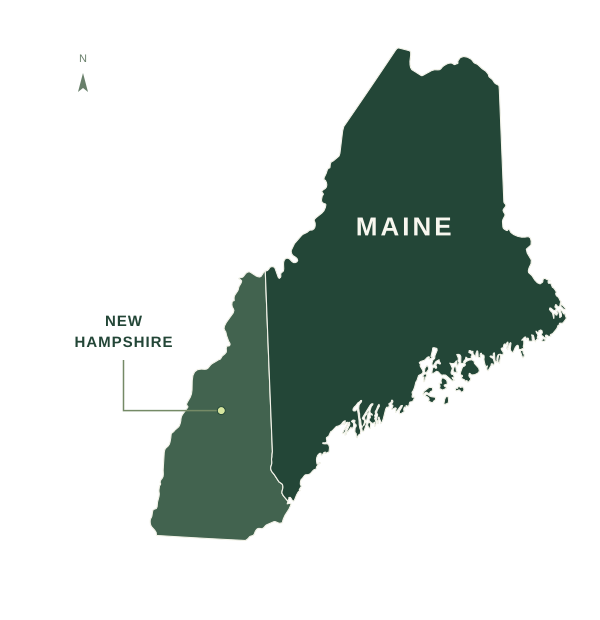

Southern coast & Midcoast
From Kittery and the Portland area through Brunswick, Bath, Rockland, and the Midcoast communities.
We serve homeowners throughout all of Maine and New Hampshire. From coastal neighborhoods to rural properties, we plan the work around your home and its location.

Two states, statewide
Our service area includes both states in full. These regions offer a few familiar landmarks; your town does not need to appear below to be in our service area.
From Kittery and the Portland area through Brunswick, Bath, Rockland, and the Midcoast communities.
Lewiston–Auburn, Augusta, Waterville, the western mountains, and the surrounding lakes and inland communities.
Bangor, the Highlands, Down East, and Aroostook County, including rural and northern communities across the state.
Portsmouth, Dover, Exeter, Manchester, Nashua, and the communities of southern New Hampshire.
Concord, the Lakes Region, the Monadnock Region, and Upper Valley communities throughout the state.
From the White Mountains through the North Country, including Berlin, Colebrook, and northern communities.
Planning the visit
Travel, driveway access, seasonal conditions, and the route into the home are considered with the rest of the project. Share anything useful about reaching the property when you get in touch.
Send the project basics and we can discuss the location, access, and next steps together.
Travel & scheduling
Yes. Both Maine and New Hampshire are served statewide, including rural and northern communities. We account for travel and property access in the project plan.
Travel and equipment requirements are considered as part of the proposal. Your location and the work involved help establish those arrangements before scheduling.
We can begin with project details, photos, and measurements. A site visit may be needed to confirm access, an opening, or other conditions that affect the work.
Tell us your ZIP code and what you have in mind. We will take it from there.